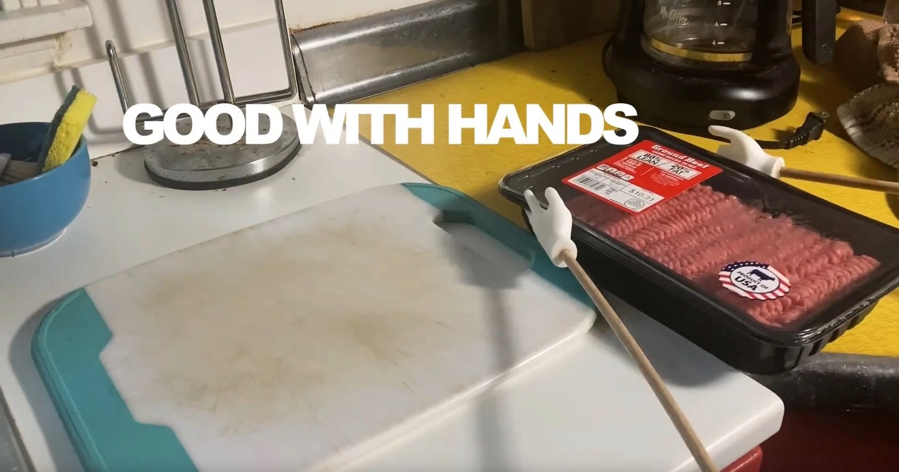
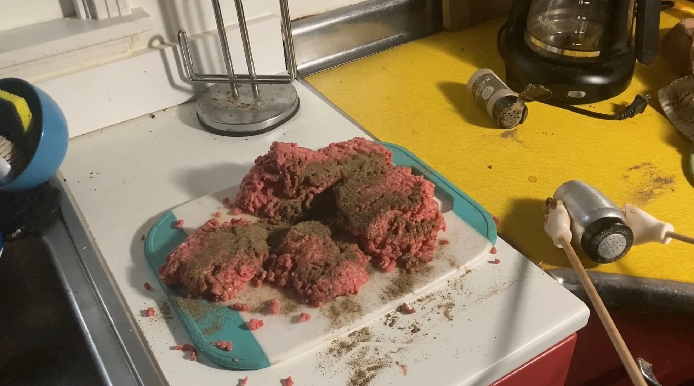
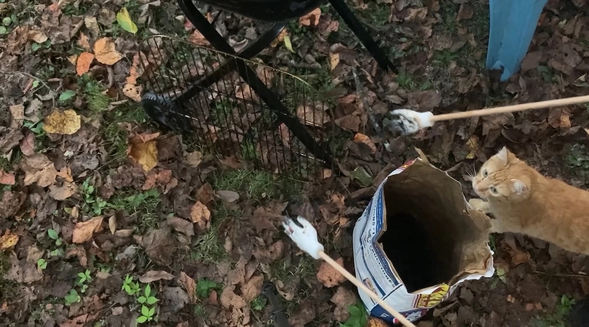

GOOD WITH HANDS
3D printed appendages attempt a BBQ - by Doug MacDowell artist
Good With Hands is a short film featuring miniature appendages, 80%/20% ground beef, Italian sausages,
and not quite smart devices. The film is 4 minutes and 12 seconds long, and was featured in the
51st Athens International Film +
Video Festival, Athens, Ohio.
Note: This film was not prepared in compliance with uniform food safety code. Not performed in
front of a live studio audience. All memorized settings reset prior to
distribution. Good With Hands and its author are not responsible for
the outcome of any recipe attempted from this film.
   />